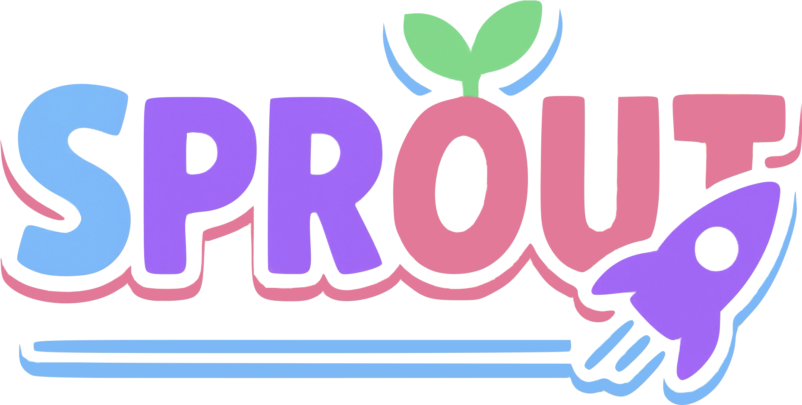
Given an unlabeled target image and a frozen foundation model, how can we construct reliable instance-level prompts without supervision or parameter updates?
To address this challenge, we propose SPROUT, a fully training-free prompting framework. Our contributions are summarized as follows:
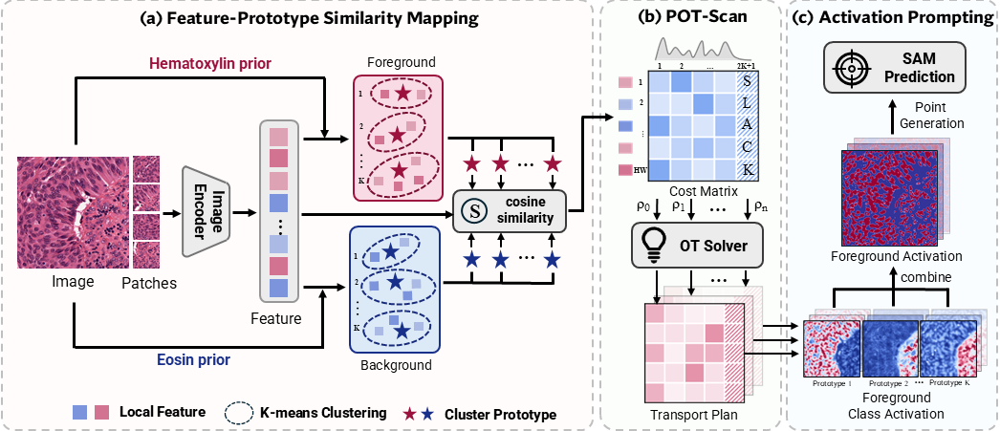
SPROUT consists of three steps:
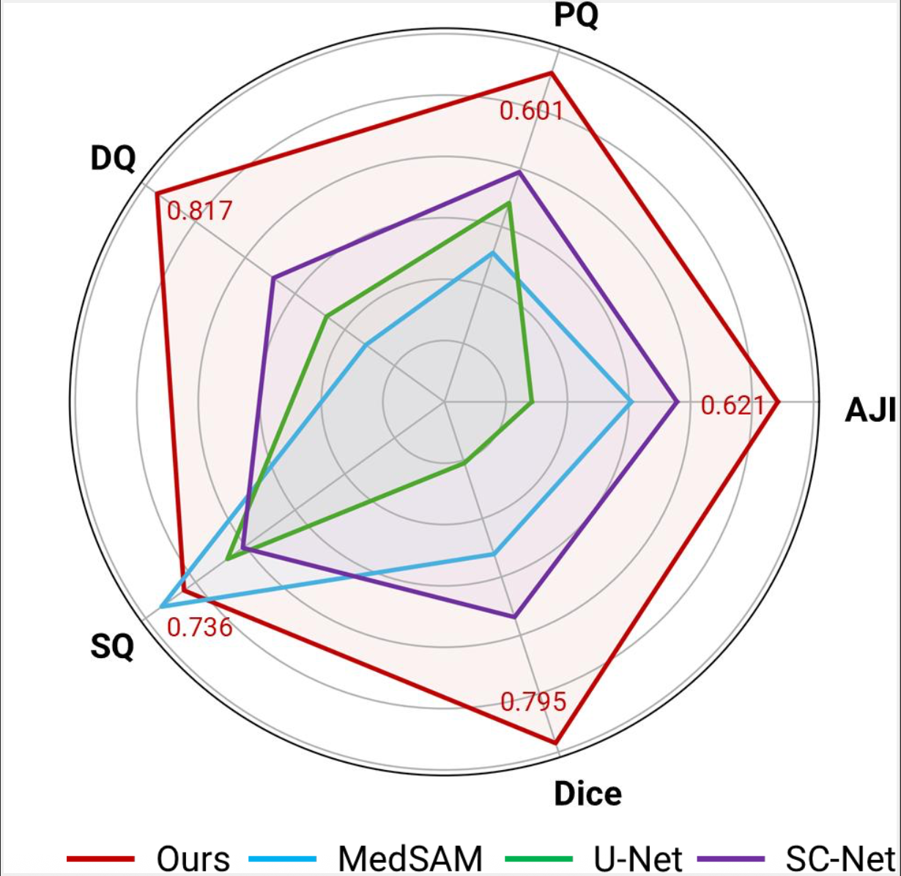
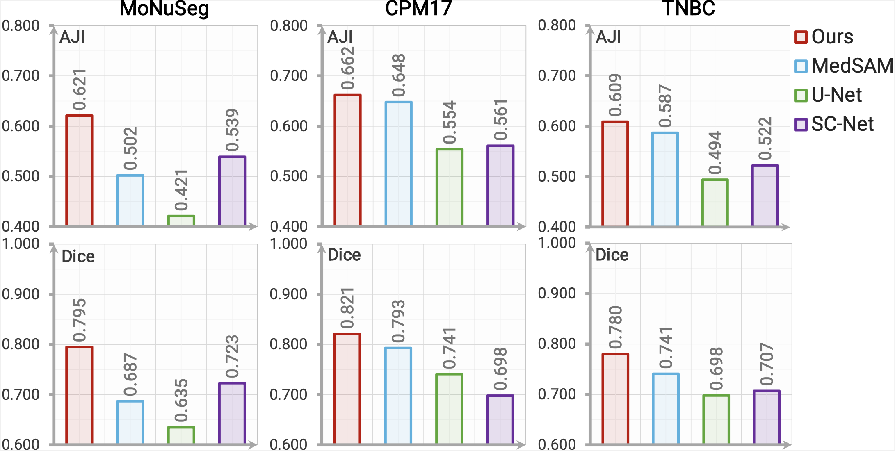
SPROUT achieves the highest AJI and Dice scores and consistently outperforms all counterparts with up to 8.2% absolute gains in AJI on the challenging MoNuSeg dataset.
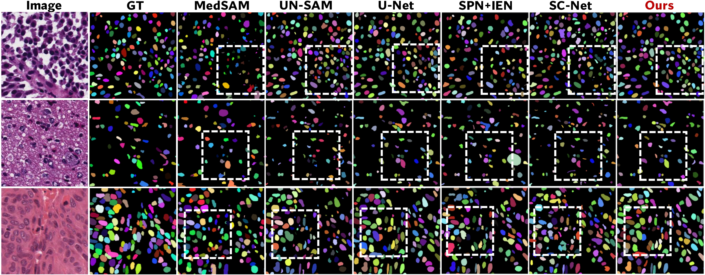
Qualitatively, SPROUT produces clean, non-overlapping masks in challenging cases with nuclei-tissue color similarity or light stain.
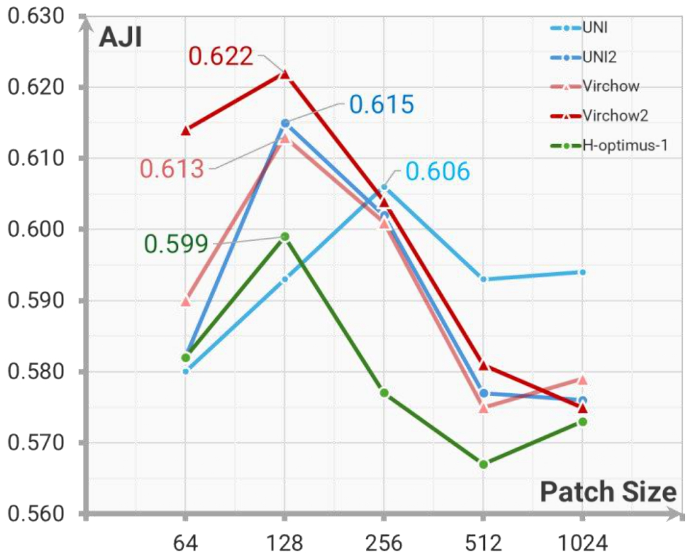
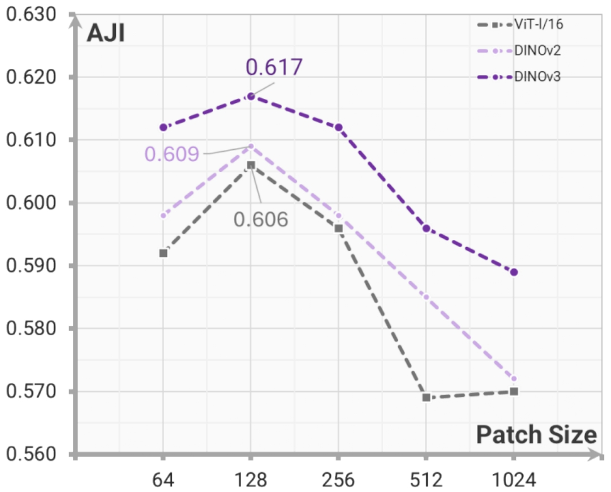
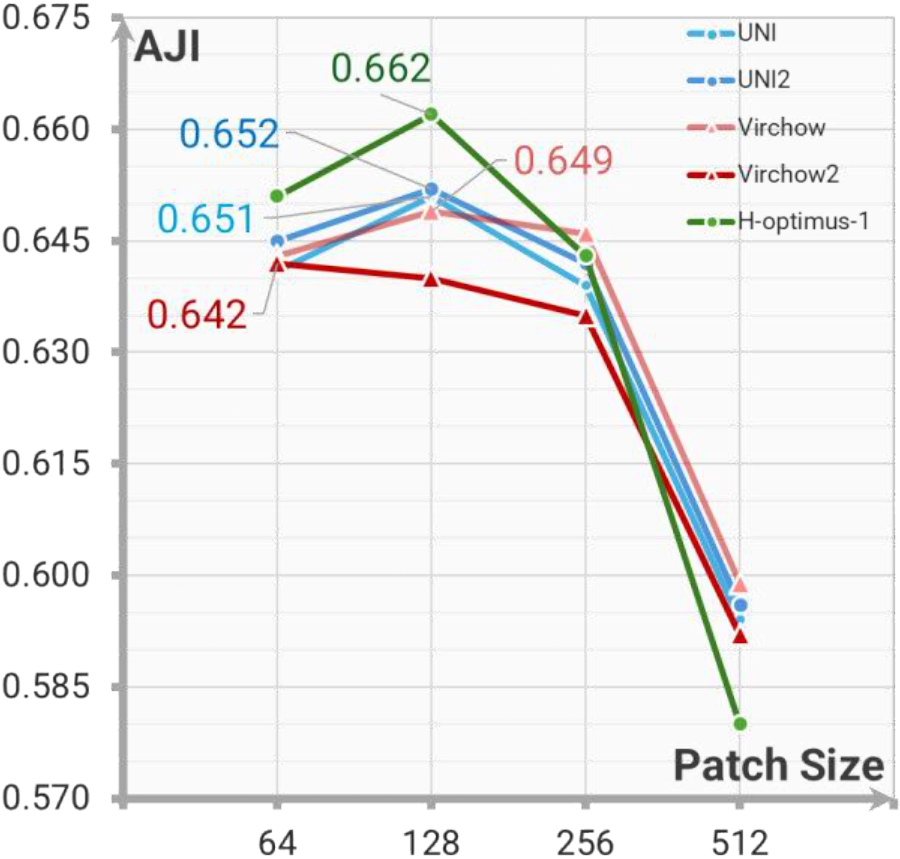
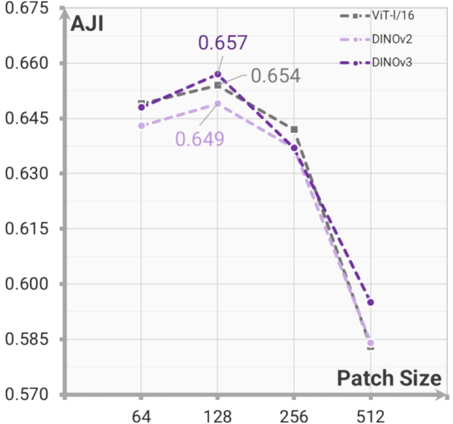
Feature Extractors. To assess the effect of the proposed self-reference mask strategy, we evaluate feature extractors pretrained on both pathology and natural images on the MoNuSeg and CPM17 datasets. The comparable AJI scores achieved by both backbone types validate the effectiveness of the proposed self-reference strategy in a fine-tuning-free setting.
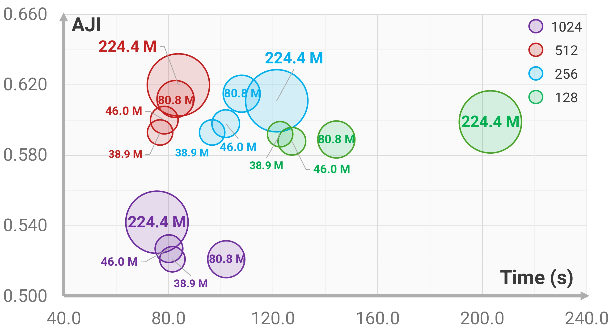
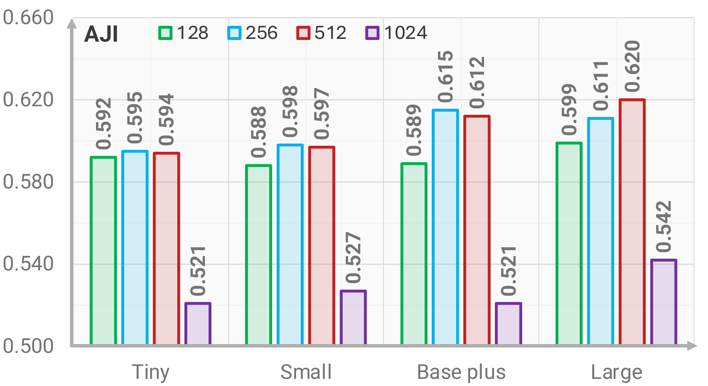
SAM Variants. All SAM variants achieve effective segmentation when paired with appropriate patch sizes, with moderate patching improving AJI by preserving sufficient context while reducing whole-image complexity. Larger models provide the best performance, whereas smaller variants remain competitive and offer practical alternatives for resource-limited computational settings.
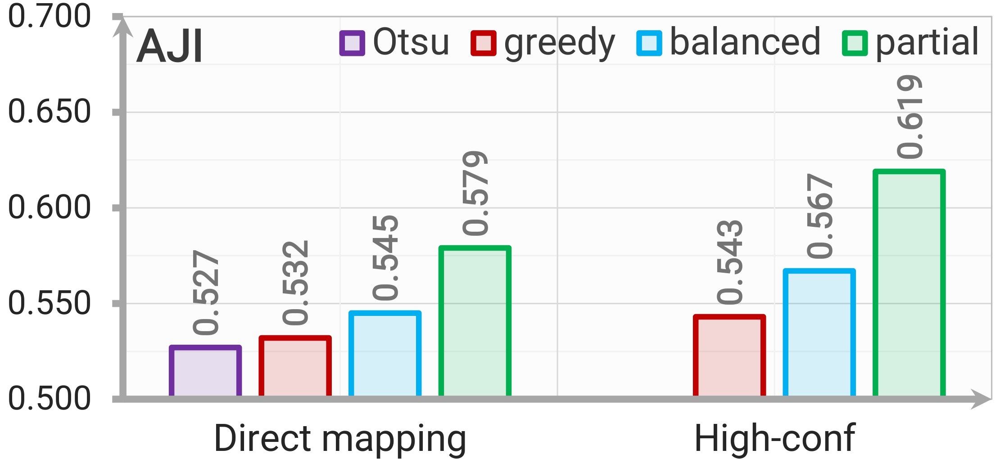
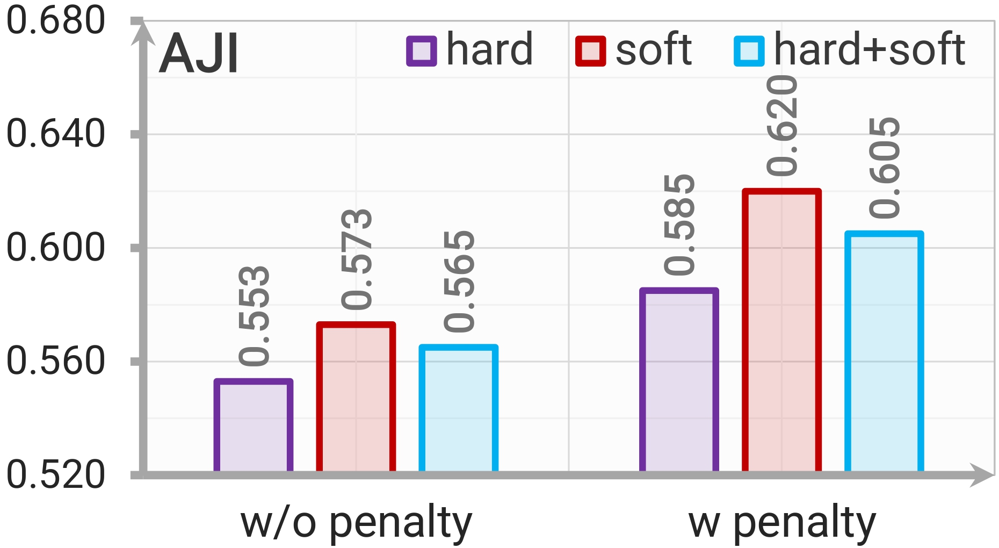
Point Generation and Post-processing. Partial OT generates the most reliable prompts by retaining high-confidence feature-prototype matches while assigning ambiguous regions to slack. The proposed containment-aware soft NMS improves mask refinement by suppressing large multi-nucleus masks while preserving acceptable overlaps in dense nuclear regions.
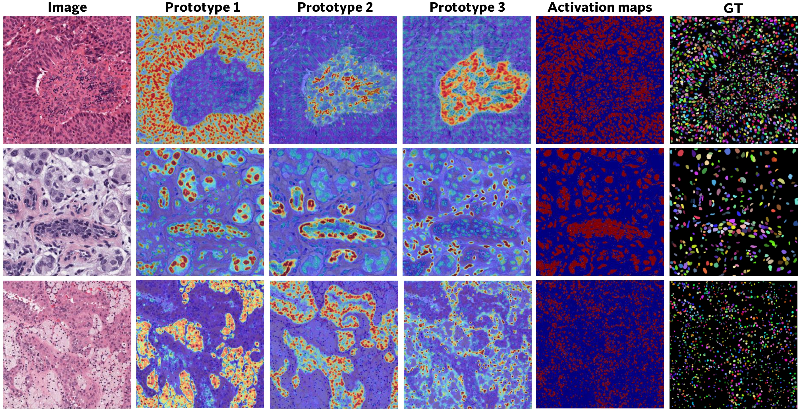
Class Activation. Each prototype emphasizes distinct morphological patterns, and their combination recovers foreground structures closely aligned with ground truth.
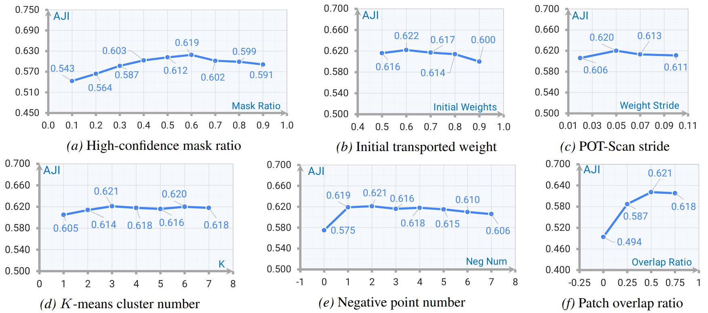
Across key hyperparameter settings, SPROUT demonstrates stable point generation and mask prediction performance, with noticeable degradation only under extreme configurations.
@inproceedings{zhang2025superviselessmoretrainingfree,
title={Supervise Less, See More: Training-free Nuclear Instance Segmentation with Prototype-Guided Prompting},
author={Wen Zhang and Qin Ren and Wenjing Liu and Haibin Ling and Chenyu You},
booktitle={International Conference on Machine Learning},
year={2026}
}